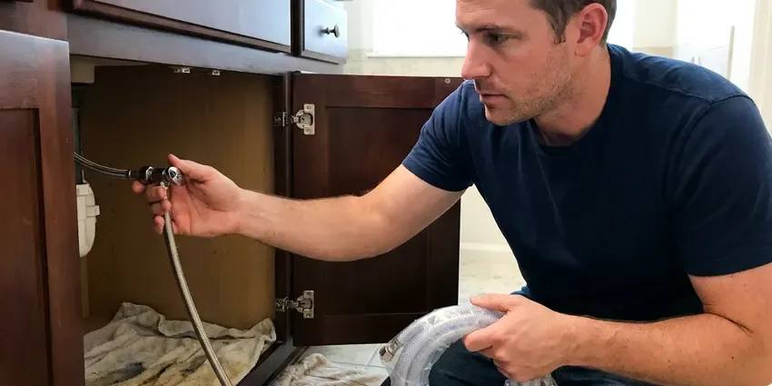
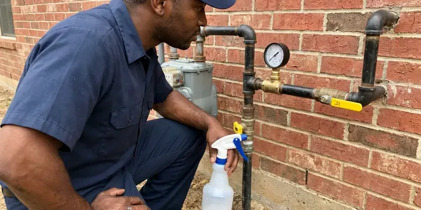

Gas Water Heater Repair in Alabaster, AL
For dependable gas water heater repair across Alabaster, AL, trust BRV Plumbing to diagnose and fix problems efficiently, ensuring your home has consistent hot water.
- Fast, Local Service
- Licensed Technicians
- Upfront Pricing
- Guaranteed Work

Expert Gas Water Heater Fixes in Alabaster, AL.
Our skilled plumbers are standing by to provide a lasting solution for your hot water needs.
Professional Gas Water Heater Repair Services in Alabaster, AL
At BRV Plumbing, we provide expert gas water heater repair services to keep your home in Alabaster, AL supplied with reliable hot water. From pilot light issues to thermostat malfunctions, our certified technicians are equipped to diagnose and resolve a wide array of gas water heater problems with precision and care.
Our expertise includes:
- Pilot Light & Burner Repairs
- Thermostat & Gas Valve Replacement
- Tank Leaks & Pressure Issues

Additional Plumbing Repair Services in Alabaster, AL
We offer expert plumbing repair services across Alabaster, AL to fix leaks, restore flow, and keep your system running smoothly.




Professional water leak repair, Alabaster



Gas Leak Repair near Alabaster

Customers
Why Choose BRV Plumbing for Gas Water Heater Repair in Alabaster, AL?
Our commitment to quality extends beyond just fixing the problem; we aim to provide lasting solutions that improve your gas water heater's performance and longevity. You can count on our skilled plumbers to deliver exceptional service every time.
- Safety First, Gas appliances require careful handling; our technicians are fully trained in gas line safety and local codes.
- Local Knowledge, We understand common water heater issues specific to Alabama's water quality and older home infrastructure.
- Reliable Parts, We use only high quality, manufacturer approved parts for all gas water heater repairs, ensuring durability.
Citywide Coverage
No matter where you're located within Alabaster, AL, our expert plumbers are ready to respond to your gas water heater repair needs. We pride ourselves on being a truly local service provider for the entire community.
Experienced Team
Each technician at BRV Plumbing is highly trained and regularly updated on the latest gas water heater technologies and repair techniques. You can trust their expertise to ensure your gas water heater is repaired to the highest standards.
Safety-First Approach
Safety is paramount when dealing with gas water heaters. Our repair processes strictly adhere to all local Alabama plumbing codes and national safety standards to protect your home and family.
Trusted Certified Alabaster Plumbing Services Professionals
At BRV Plumbing, we take pride in providing licensed, certified plumbing services throughout Alabaster, AL. Backed by recognized industry credentials, our experienced plumbers combine technical skill with genuine customer care. Whether it is repair, installation, or maintenance, we follow strict safety and quality standards to deliver lasting results you can trust.
Call Us Now PHCC Plumbing Contractor Recognition
PHCC Plumbing Contractor Recognition Better Business Bureau (BBB) Accreditation
Better Business Bureau (BBB) Accreditation Angi Certified Pro
Angi Certified Pro ISO 9001 Quality Management Certification
ISO 9001 Quality Management CertificationDependable Gas Water Heater Repair Services in Alabaster, AL
Pilot Light & Burner Issues in Alabaster
A common problem with gas water heaters is a pilot light that won't stay lit or a burner that fails to ignite. This can be caused by a faulty thermocouple, a dirty pilot tube, or issues with the gas control valve. Our technicians in Alabaster are adept at diagnosing these specific components and performing the necessary repairs, whether it's cleaning, recalibrating, or replacing parts. We ensure proper gas flow and ignition for consistent hot water.

Thermostat & Gas Valve Repair in Alabaster, AL
If your gas water heater isn't heating water to the correct temperature, or if it's overheating, the thermostat or gas valve might be to blame. These components regulate the gas supply and temperature. Our plumbers in Alabaster, AL can test the thermostat for accuracy and inspect the gas valve for any blockages or malfunctions. We carry a range of replacement parts for various brands, allowing for quick and efficient repairs.
Tank Leaks & Pressure Problems in Alabaster
Even gas water heaters can develop tank leaks, often due to corrosion from hard water prevalent in some parts of Alabama, or high water pressure. While some leaks might necessitate a replacement, minor leaks or pressure relief valve issues can often be repaired. Our team assesses the extent of the damage, checks the anode rod, and addresses pressure imbalances to prevent further complications in your Alabaster home.
Emergency Gas Water Heater Repair in Alabaster, AL
When your gas water heater fails unexpectedly, it can disrupt your entire household. BRV Plumbing offers emergency gas water heater repair services throughout Alabaster, AL to address critical issues promptly. Whether it's a complete lack of hot water, a gas odor, or a significant leak, our emergency response team is equipped to provide rapid diagnosis and repair, restoring your hot water and peace of mind.
Restoring Hot Water for Older Homes in Alabaster
Many homes in Alabaster feature older gas water heater models that require specialized knowledge for repair. Our technicians are familiar with the common issues and unique parts associated with these systems. We can troubleshoot and repair older units, often extending their lifespan, rather than pushing for immediate replacement. We focus on cost-effective repairs that respect the history of your home.
Bradford White & Rheem Gas Water Heater Repair in Alabaster, AL
We are proficient in repairing all major gas water heater brands, including popular models like Bradford White and Rheem, commonly found in Alabaster, AL homes. Our team understands the specific schematics and common failure points for these manufacturers. We stock or can quickly source genuine replacement parts, ensuring that your specific brand of gas water heater receives the expert attention it needs for a lasting repair.
Gas Water Heater Noise Troubleshooting in Alabaster
Strange noises coming from your gas water heater, such as rumbling, popping, or whistling, often indicate sediment buildup in the tank or a faulty heating element. In Alabaster, hard water can exacerbate sediment accumulation. Our repair service includes flushing the tank and inspecting for sediment, addressing pressure issues, or checking other components that might be causing the noise, improving efficiency and quiet operation.

Gas Water Heater Code Compliance in Alabaster, AL
Any repair involving gas appliances must adhere to strict local and state plumbing codes. BRV Plumbing ensures all gas water heater repairs in Alabaster, AL are performed in full compliance with current regulations. This includes proper venting, gas line connections, and earthquake strapping where applicable. Our adherence to code ensures not only safety but also passes any future inspections.
Gas Water Heater Repair Near Me in Alabaster, AL
When you search for 'gas water heater repair near me' in Alabaster, AL, BRV Plumbing is your local answer. We pride ourselves on being a community focused plumbing company, ready to serve our neighbors with reliable and quick service. Our proximity allows us to respond to your hot water emergencies without delay.
Our team lives and works right here in the Alabaster area, giving us a unique understanding of the local plumbing landscape and immediate access to your service needs. For dependable, prompt gas water heater repair, you don't need to look any further than BRV Plumbing.
BRV Plumbing at a Glance
- Fully licensed plumbing team covering Alabaster, AL
- 24/7 emergency service with same-day scheduling
- Clear written estimates, no hidden fees
- 4.8-star rated by 549+ Alabama customers
Alabaster Map
Alabaster Information
- Population
- 34,107
- Area codes
- Local
- Service area
- Alabaster and communities within 40 miles
- Nearby
- Hoover, Vestavia Hills, Birmingham, Tuscaloosa
Given Alabama's climate, ensuring your gas water heater is in top condition is crucial for consistent comfort, especially during cooler periods when hot water demand is higher.
Expert Services
Trust our professionals for reliable BRV Plumbing solutions in Alabaster, AL.
Our Specialized Plumbing Services in Alabaster, AL
At BRV Plumbing, we provide a complete range of plumbing services across Alabaster, AL. From leak detection to full system installations, our team ensures fast, precise, and affordable service for both residential and commercial properties. Explore our core services below:


How Our Gas Water Heater Repair Process Works in Alabaster, AL
Our gas water heater repair process is designed for clarity, efficiency, and minimal disruption to your Alabaster home. We aim to get your hot water running reliably as quickly as possible.
Request a Quote
Contact BRV Plumbing at (256) 391-9413 to describe your gas water heater issue. We'll gather basic information and schedule a convenient time for a technician to visit your Alabaster home.
On-Site Diagnosis
A certified plumber will arrive at your home to thoroughly inspect your gas water heater, identify the root cause of the problem, and explain the necessary repairs.
Transparent Estimate
Before any work begins, you'll receive a detailed, upfront estimate for the gas water heater repair. We ensure you understand all costs and options.
Frequently Asked Questions About Gas Water Heater Repair in Alabaster
The cost of gas water heater repair in Alabaster, AL can range from $150 to $800, depending on the complexity of the issue and the parts required. Minor repairs like a thermocouple replacement might be on the lower end, while a gas control valve replacement could be higher. We provide a detailed estimate after diagnosing the problem.
Minor repairs to existing components typically do not require a permit in Alabama. However, if a major component like the gas control valve or the entire unit is replaced, a permit may be required by local Alabaster building codes to ensure safety and compliance. We will advise you if a permit is needed.
Look out for a lack of hot water, lukewarm water, strange noises like popping or rumbling, a pilot light that won't stay lit, a rotten egg smell near the unit, or visible leaks around the tank. Any of these symptoms warrant a professional inspection.
BRV Plumbing stands behind our work. All gas water heater repairs performed by our technicians come with a warranty covering both parts and labor. We will provide specific warranty details at the time of service, giving you peace of mind.
While some minor issues might seem DIY friendly, working with gas appliances carries significant safety risks, including gas leaks and carbon monoxide poisoning. It's always best to call a licensed professional for gas water heater repair to ensure safety and proper functionality, especially in Alabama where local codes are strict.
This could indicate several issues, including a faulty thermostat, a burner that isn't heating efficiently, or sediment buildup at the bottom of the tank reducing its capacity. Our plumbers can diagnose the exact cause and recommend the appropriate repair.
Our technicians are experienced in repairing all major gas water heater brands, including but not limited to Rheem, Bradford White, A.O. Smith, State, and Noritz. We have access to parts for a wide variety of models and manufacturers.
Most common gas water heater repairs, such as replacing a thermocouple or thermostat, can be completed within 1 to 3 hours. More complex issues or those requiring special parts might take longer, but we always aim for same-day resolution whenever possible.
What People Are Saying About Our Plumbing Experts?

Mark T.
When our office needed drain cleaning, BRV Plumbing provided quick, reliable service. The plumber arrived on time and made sure every drain flowed perfectly before leaving. Very satisfied.
Drain Cleaning · Northport, AL
Robert G.
The trenchless sewer replacement saved our front yard. They walked us through the camera inspection footage first so we knew exactly what we were paying for.
Sewer Line Replacement · Birmingham, ALJames P.
Our commercial plumbing system had a leak under the sink, and BRV Plumbing handled it professionally. The plumbers arrived quickly and restored everything without disruption to our customers.
Commercial Plumbing · Alabaster, AL
Sofia M.
Two new toilets installed in one visit, no mess left behind, and the tech even adjusted a faucet he noticed was dripping. Fair pricing and really friendly.
Toilet Installation · Birmingham, AL
Daniel K.
A pipe burst at 11 pm and they actually answered. The plumber showed up within the hour, shut everything down, and had us back to normal the next morning. Could not ask for more.
Emergency Plumbing · Tuscaloosa, AL
Emily R.
I called BRV Plumbing for plumbing repair, and the technician was fast, polite, and thorough. They explained the problem clearly and fixed it the same day. I will definitely hire them again. Highly recommended!
Plumbing Repair · Vestavia Hills, AL